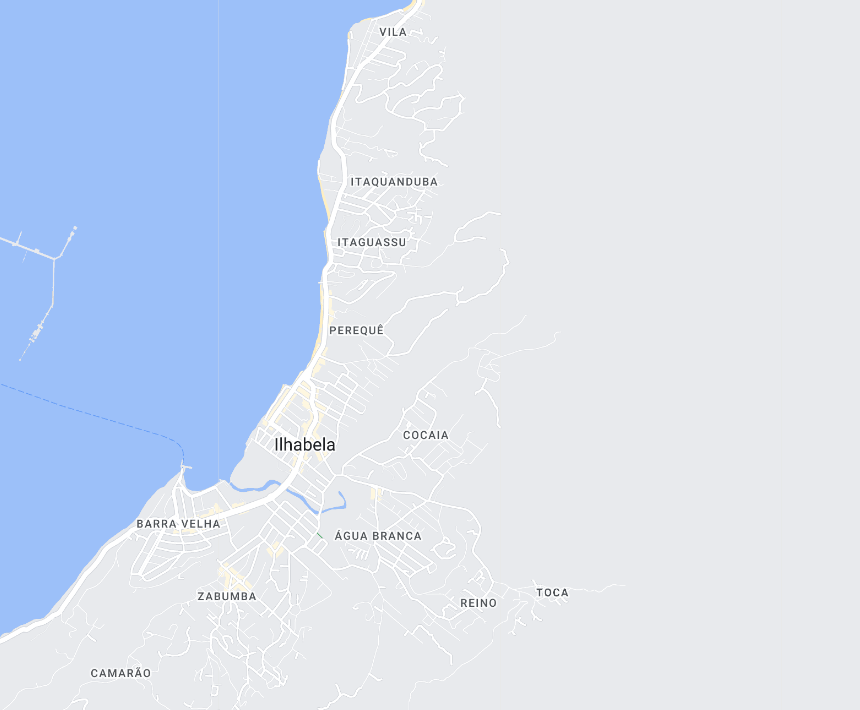

Ilhabela - Geodex

Município de Ilhabela
-
População: 36.194 pessoas
-
Área: 346,389km²
-
Fundação: 3 de Setembro de 1805
-
Distância da Capital: 207km
Ilhabela, localizada no litoral norte do estado de São Paulo, é uma bela ilha que encanta por suas praias paradisíacas e natureza exuberante. A cidade foi fundada em 3 de setembro de 1805 e tem como principal atividade econômica o turismo. Além das praias de águas cristalinas, Ilhabela oferece trilhas em meio à Mata Atlântica, cachoeiras, esportes náuticos e uma rica história cultural. Com sua atmosfera descontraída e charmosa, a cidade atrai visitantes em busca de relaxamento e aventura em um cenário natural deslumbrante.